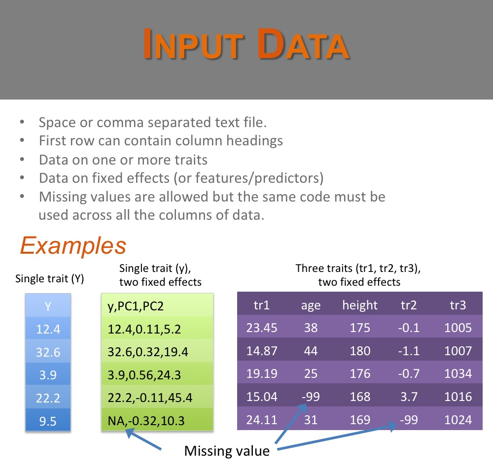
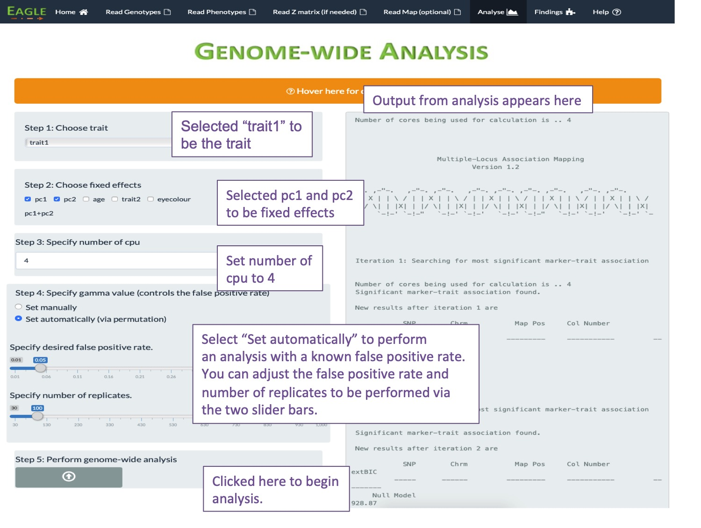
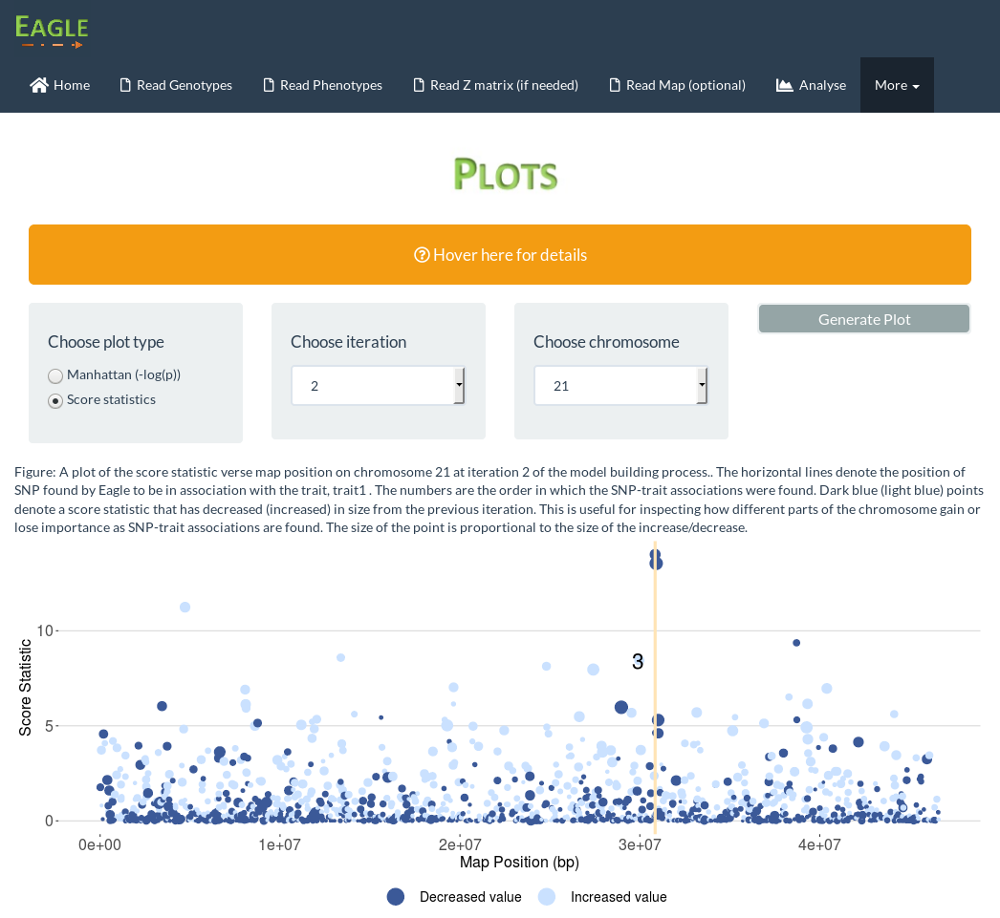

Quick Start
A How To guide for using the Eagle GUI [revised May 2019]
Getting Started
To install the Eagle package, from an interactive session in R, type the following command
install.packages("data.table") then type the command
install.packages("Eagle" , repos = "https://cloud.r-project.org/", dependencies=TRUE) It may seem strange to first install data.table then Eagle. However, for R Open, under some linux distributions, we found data.table failed to install when the package was obtained from https://cloud.r-project.org. The solution was to install data.table from its default MRAN repository, and then install Eagle and its other dependencies from https://cloud.r-project.org. By using this repository, we are downloading the most current version of Eagle (the version of MRAN is several versions and bugs old)
Once Eagle has been installed, the package is ready to be loaded into your R session with
library("Eagle")You will see a message saying that Eagle has been loaded.
Running Eagle via the GUI
The easiest way of interacting with Eagle and performing an analysis is through our web-based graphical user interface (GUI). To run the GUI, at the R prompt, type
OpenGUI()The Eagle GUI home page - a good place to start
When the Eagle GUI is run, it opens the web browser to a home page. At the top of the page is a navigation bar. To perform an analysis, work your way through each navigation item, from left to right, with the Read Z matrix item being only if you have repeated trait measurements for an individual and Read Map item being optional.
How to organize your association mapping data
When an individual has a single trait value
Suppose there are n individuals and for the trait of interest, each individual has a single observation, so that there are n trait values. Here, we split the data into three separate datasets:
Reading in the Marker Data
Note: From version 2.2, Eagle will also accept marker data in vcf format. Variant Call Format version 4.0 is assumed. See our video on Input Data for more information.
There are two types of marker data file that Eagle can handle; a PLINK ped file and a plain text file. Below, is an example of each of these file types.

To read in the marker data which are in PLINK format, click on the Read Genotype tab in the navigation bar at the top of the home page and complete the form (see below). After the upload file button has been clicked, a loading animation will appear in the bottom right of the page. Once the loading is complete, summary information will appear on the right of the page.

To read in the marker data which are in a plain text file, click on the Read Genotype tab in the navigation bar at the top of the home page and complete the form (see below). After the upload file button has been clicked, a loading animation will appear in the bottom right of the page. Once the loading is complete, summary information will appear on the right of the page.

Reading in the Phenotypic Data
The file containing the phenotypic data is a plain text file. Below are three examples of what this file could contain.
To read in the phenotypic data, click on the Read Phenotype tab in the navigation bar and complete the form (see below). After the upload file button has been clicked, a loading animation will appear in the bottom right of the page. Once the loading is complete, summary information will appear on the right of the page.
Reading in the Marker Map
The file containing the marker map is a plain text file. Below are two examples of what this file could contain.

To read in the map data, click on the Read Map tab in the navigation bar and complete the form (see below). After the upload file button has been clicked, a loading animation will appear in the bottom right of the page. Once the loading is complete, summary information will appear on the right of the page.

When an individual has repeated trait values
Suppose there are m individuals and for the trait of interest, there are n trait values where n > m . Here, some individuals have repeated observations for the trait. For example, we may have a plant study where the trait of interest is yield. The study may contain m different plant varieties. For each variety, we may plant them in multiple plots and record the yield per plot.
The data are split into four separate datasets:
Reading in the Marker Data
Note: From version 2.2, Eagle will also accept marker data in vcf format. Variant Call Format version 4.0 is assumed. See our video on Input Data for more information.
There are two types of marker data file that Eagle can handle; a PLINK ped file and a plain text file. Below, is an example of each of these file types.
To read in the marker data which are in PLINK format, click on the Read Genotype tab in the navigation bar at the top of the home page and complete the form (see below). After the upload file button has been clicked, a loading animation will appear in the bottom right of the page. Once the loading is complete, summary information will appear on the right of the page.
To read in the marker data which are in a plain text file, click on the Read Genotype tab in the navigation bar at the top of the home page and complete the form (see below). After the upload file button has been clicked, a loading animation will appear in the bottom right of the page. Once the loading is complete, summary information will appear on the right of the page.
Reading in the Phenotypic Data
The file containing the phenotypic data is a plain text file. Below are three examples of what this file could contain.
To read in the phenotypic data, click on the Read Phenotype tab in the navigation bar and complete the form (see below). After the upload file button has been clicked, a loading animation will appear in the bottom right of the page. Once the loading is complete, summary information will appear on the right of the page.
Reading in the Marker Map
The file containing the marker map is a plain text file. Below are two examples of what this file could contain.
To read in the map data, click on the Read Map tab in the navigation bar and complete the form (see below). After the upload file button has been clicked, a loading animation will appear in the bottom right of the page. Once the loading is complete, summary information will appear on the right of the page.
Reading in the Z matrix file
The Z matrix file is a plain text, space separate file with no row or column headings. Each row contains 0's and a single entry that is 1. If the ith row and jth column contains a 1, then this means the ith row of the phenotype file corresponds to the jth row of the marker file. A row can only contain a single entry with a value of 1.
To read the Z matrix file, click on the Z matrix tab in the navigation bar and complete the form (see below). After the upload file button has been clicked, a loading animation will appear in the bottom right of the page. Once the loading is complete, summary information will appear on the right of the page.

Performing Genome-wide Association Mapping
We will assume that you have loaded your data successfully into Eagle and are now ready to analyse the data. Eagle finds SNP-trait associations by building the "best" model. We measure "best" via the extended BIC statistic. The false positive rate for this statistic is controlled by the lambda parameter. Values closer to 1 (0) reduce (increase) the false positive rate but also power of finding SNP-trait associations.
Eagle gives you two ways of analysing your data. One way is where you set the lambda value manually. This is the "quick" way. The other way is where you let Eagle find the lambda value corresponding to a desired false positive rate for the analysis. This way is slower as it involves permutation but it is the preferred way. Both scenarios are presented below.

Scenario 1: Suppose you are interested in performing a "quick" preliminary analysis of your data. You can do this by selecting "Set manually" in Step 4. If the lambda value is left at its default value of 1, a conservative (low false positive rate) analysis of the data will be performed. If you want to make the analysis less conservative, move the slider bar for the lambda value closer to 0. This will increase the power of detecting SNP-trait associations but also increase the false positive rate.
Scenario 2: Here, we have selected the "Set automatically" option in Step 4 to let Eagle set the lambda value via permutation. In this example, Eagle will find the lambda value that gives a false positive rate of 5% for finding SNP-trait associations. The analysis takes about five times as long to run.
Findings
Below are the two pages associated with Findings. The first page (A) is what appears by default. It lists those snp, if any, that are in strongest linkage disequilibrium with the genes that are controlling the trait. That is, the snp listed are the snp closest to the regions of the genome housing genes that influence the trait.
The second page (B) gives additional information on the (additive) size of the snp effects, on their p-values, and an estimate of the amount of phenotypic variation explained by the snps.

Plots (Version 1.5.0)
From Version 1.5.0, a Plot facility has been added to the GUI. At each step of the model building process, a set of score statistics are calculated. These score statistics are used to identify the next "best" SNP in association with the trait. A user can examine how the score statistics change at each iteration of the iterative model building process.
An example screenshot is shown below.
